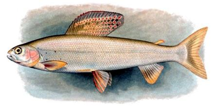

Graylings

[Genus Thymallus]
These fish belong to the Salmon family along with Trout and Whitefish.
They inhabit fresh waters in the far north and are easy to tell from trout by
their large scales and a very large and showy dorsal fin. The longest and
most commercialized (wild and farmed) is the Arctic Grayling (T. arcticus
arcticus) which may grow to 30 inches and over 8 pounds. The grayling
proper (T. thymallus,) is a European species that may grow to 24
inches and weigh as much as 15 pounds.
Drawing of Arctic Grayling by U.S. Fish an Wildlife Service =
public domain.
|
Cooking: Prepare as for Trout, but you'll have to scale these. |